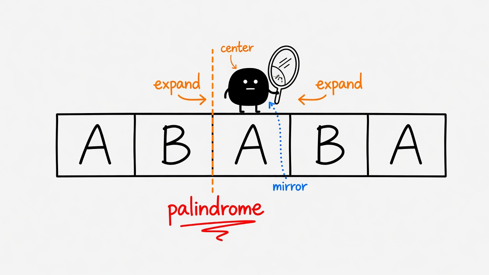
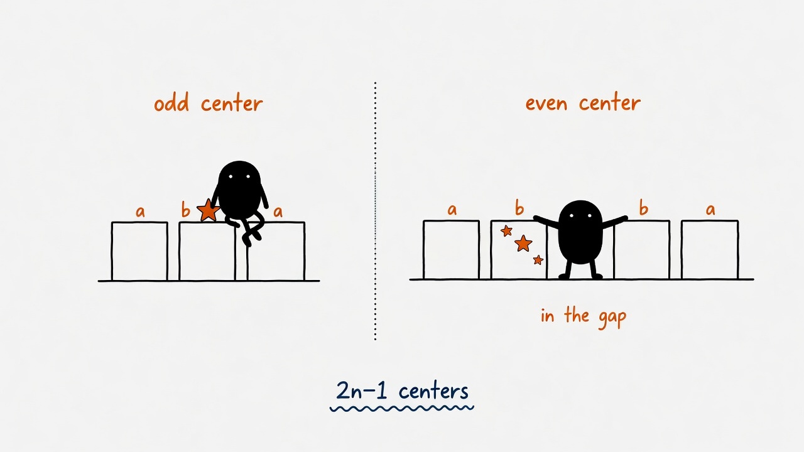
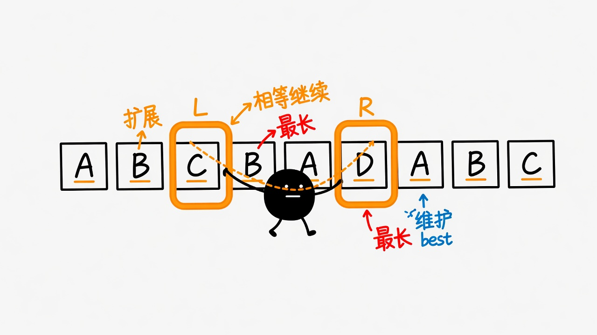

Vocabulary: palindrome · substring · expand around centers · odd / even center · DP
First: substring (contiguous) ≠ subsequence (can skip). Then the whole game is one idea: a palindrome is a mirror — pick a center, walk left and right while the mirrors match, keep the longest run. Quiz grades only on final submit. Pass clipboard includes #id · slug · time.
cbbd) needs a center between two chars.Don’t open with “try every pair of endpoints.” Once you name the center, the longest palindrome around it is unique: keep expanding while the two sides agree. So we enumerate centers, not substrings.
Two kinds of centers (about \(2n-1\) of them)
\[ \text{odd length: center on char }i \quad(L,R)\leftarrow(i,i) \] \[ \text{even length: center in the gap }i\,|\,i{+}1 \quad(L,R)\leftarrow(i,i+1) \]Expand while the mirrors match
\[ \text{while } L\ge 0 \land R<n \land s[L]=s[R]: \quad L\leftarrow L-1,\; R\leftarrow R+1 \]When the loop stops, \(L\) and \(R\) overshot — the real span is
\[ [L+1,\, R-1] \] Track the global best \((\mathrm{start},\,\mathrm{len})\).Expand around centers is not fancy for fancy’s sake. Palindrome means symmetry. Parameterize by the axis, and “all substrings” collapses to “all axes” — constant space, short code.
Every substring, then a linear palindrome check. Crystal clear; \(n=1000\) is already sweaty.
~\(2n-1\) centers, expand each, keep the longest span. What you buy: you stop enumerating endpoint pairs — you only walk symmetry axes.
\(\mathrm{dp}[i][j]=(s[i]=s[j])\land(\text{short or }dp[i+1][j-1])\). Correct, heavier. Expand is closer to the definition.
| Approach | You gain | You pay |
|---|---|---|
| Brute | Obvious definition | Time |
| Expand | \(O(n^2)\), \(O(1)\) space, fun to write | Must cover odd + even centers |
| DP | Clean transitions, extensible | Extra \(O(n^2)\) memory |
If you only expand from a character, you miss even-length pals like
bb and abba — their mirror axis sits in the
gap between two characters.
| Type | Seed | Picture |
|---|---|---|
| Odd center | \(L=R=i\) | aba — axis on b |
| Even center | \(L=i,\;R=i+1\) | abba — axis between the two bs |
expand(l, r).
Odd → expand(i, i). Even → expand(i, i+1).
Same loop, two seeds. No drama.



babad (odd wins)
Center on index-1 a expands to bab
(or center on index-2 → aba). Best length 3 — pick either.
cbbd (even is mandatory)
Character centers top out at length 1. Seed the gap between the two
bs: \(L=1, R=2\) → bb. That’s the answer.
The while loop dies when it hits a mismatch or the border — so \(L\) and \(R\) have already stepped one too far. The true palindrome is \([L+1, R-1]\), length \(R-L-1\).
Focus: expand + odd/even centers. Pass clipboard: #id · slug · time · next step.
Q1. “Palindromic substring” means…
Q2. The recommended model is…
Q3. Why bother with even centers (gap between chars)?
Q4. After expand stops on mismatch, the valid span is…
Q5. One longest palindromic substring of cbbd? (lowercase)
bs → bb.Q6. Expand vs brute — the big win is…
Q7. Longest palindromic subsequence — still expand around centers?